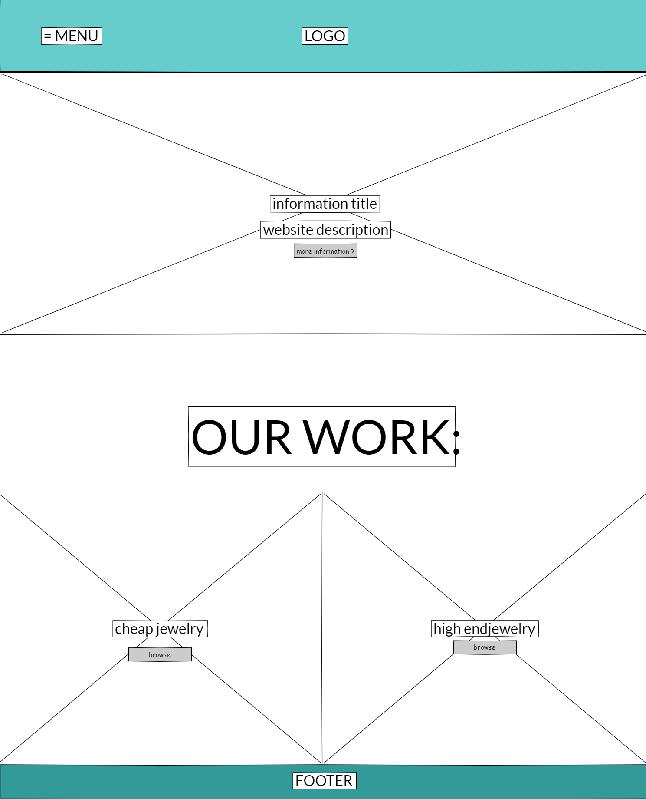

a luxury jewelry webshop concept focused on UX and visual design

Aria Argentata is a luxury jewelry concept website created as a group project. I focused on UX design, mid- and high-fidelity prototyping, and applying user research throughout the process.
We each started by designing a mid-fidelity prototype. I used Pencil and explored visual patterns from luxury brands like Tiffany & Co. and Audemars Piguet. I emphasized large visuals and fewer items per row to reflect the high-end feel. I also applied Gestalt principles—like similarity and proximity—to create a clean, structured layout.
Later, we merged our individual concepts into a shared high-fidelity design in Figma. One of the main challenges was balancing the stakeholder’s provided colors and content with a luxurious aesthetic. Through feedback and iteration, we built a custom color palette that aligned better with the brand, introduced gradient overlays, and integrated their dark blue logo more effectively into the navigation and footer.
Alongside the design process, I conducted a user interview to understand online jewelry shopping habits. Insights from that, plus team interviews and A/B testing, helped us refine usability details—like the value of navigation buttons, clear product imagery, and transparency in descriptions. We also ran user tasks to test flow and ease of navigation, which confirmed the direction we were taking was working.
In the end, we delivered a refined Figma prototype instead of a coded website, due to time constraints. This allowed us to focus on the UX and polish the visual design. The project taught me how to translate stakeholder feedback, user needs, and visual design into a working prototype grounded in real research.